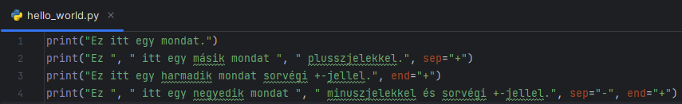
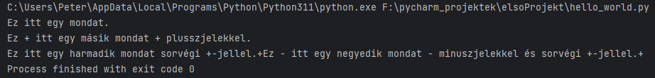
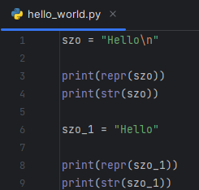
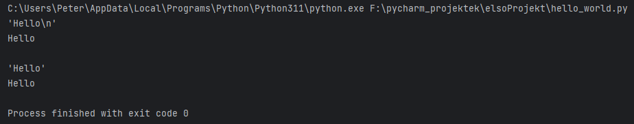

A témakör célja, hogy a tanulók az életből (akár iskolai életből) vett példák alapján egyszerűbb programokat írjanak Python program segítségével, melyekben találkozhatnak a különböző típusú literálokkal, aritmetikai operátorokkal, matematikai függvényekkel, illetve megismerhetik a változók használatát is. A témakör elsajátítása lehetővé teszi, hogy a különböző típusú adatok, összetett adatszerkezetek célszerű választásával képesek legyenek megoldani problémákat, szükség esetén saját függvényeket tudjanak készíteni, használni.
- Mi az a REPL (Read, Eval, Print, Loop)?
- A print() függvény használatáról.
- A karakterláncokat ""-jelek közé írjuk.
- A vesszővel elválasztott értékeket paraméterenek hívjuk. (második, harmadik példa)
- A második példában a sep paraméterrel megadott "+"-karakterrel, az előtte lévő vesszővel, elválasztott karakterláncokat fűzzük össze.
- A harmadik példában az end paraméterrel megadott "+"-karakterrel, az előtte lévő vesszővel, elválasztott karakterláncot zárjuk le. Utána elmarad a soremelés, mert az cseréltem ki a +jelre!
- Az előbbi kettő természetesen kombinálható (negyedik példa).
- Mi az a formatált karakterlánc literál?
Ha rövid kódrészleteket szeretnénk kipróbálni, futtatni, akkor használjuk az úgynevezett REPL szerkesztőt. Ehhez nyissuk meg a parancssort (command line), majd írjuk be a python szót azután nyomjunk egy enter-t. Itt soronként tudjuk beírni az utasításokat, majd enter-t ütve végrehajtani azt. Kilépni az exit() utasításal tudunk.

Többsoros utasítás beviteléhez használd a shift + enter billentyűkombinációt!

A Python tanulása során az információkat legtöbbször a konzolról kérjük be és oda is íratjuk ki. Ez utóbbihoz a print() függvényt használjuk. Ez a függvény csak karakterláncokat (sztring) képes megjeleníteni, még ha ez néha nem is egyértelmű.
Nézzünk néhány példát:


Figyeljük meg a következőket:
Karakterlánccá az str() és a repr() függvénnyel tudunk alakítani dolgokat. Mi csak az elsőt fogjuk használni!


A későbbiekben szükségünk lesz kívűlről kapott értékek beillesztésére is a karakterláncba. Ehhez használjuk a formatált karakterlánc literált (formatted string literal).